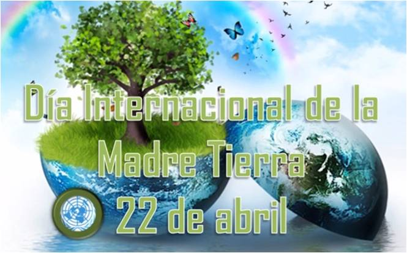
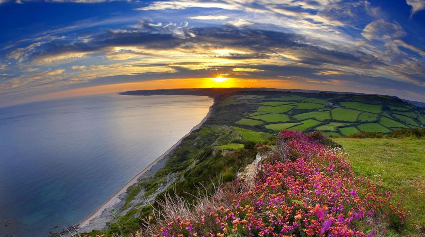
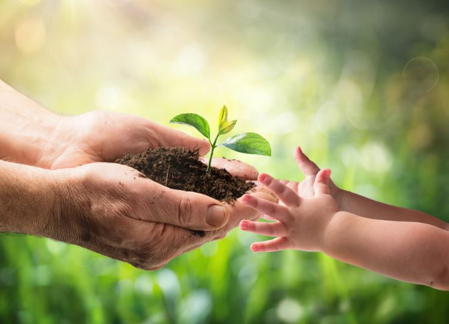
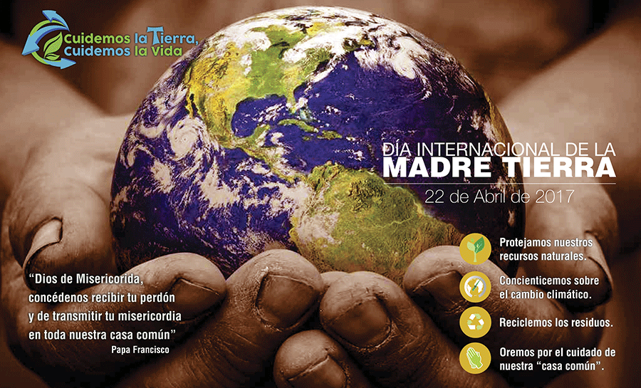
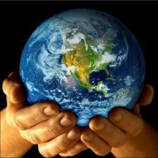
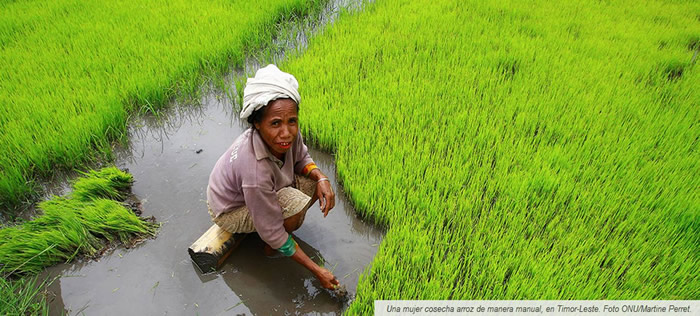

Dia internacional de la Madre Tierra 22 de abril
- 
- 

- 


- 
Realizado por
Eulogio Rne Galvez Segundo
4 "G"
Especialidad:
Programacion
Submodulo:
Desarrolla Aplicaciones Móviles
Docente:
Lic.José Antonio Gómez Hernández
4 "G"
Programacion
Desarrolla Aplicaciones Móviles
Lic.José Antonio Gómez Hernández
Celebramos el Día Internacional de la Madre Tierra para recordar que el planeta y sus ecosistemas nos dan la vida y sustento.Con este día, asumiremos, ademas, la responsabilidad colectiva,como nos recordaba la Declararcion de Rio de 1992, de fomentar esta armonia con la naturaleza y la Madre Tierra. Este día nos brinda tambien la oportunidad de concienciar a todos los habitantes del planeta acerca de los problemas que afectan a la Tierra y alas diferentes formas de vida que en el se desarrollan.

1968. Morton Hilbert y el U.S. Public Health Service (Servicio de Salud Pública de E.E.U.U.), organizaron el Simposio de Ecología Humana, una conferencia medioambiental para que estudiantes escucharan a científicos hablar sobre los efectos del deterioro ambiental en la salud humana. Este fue el primer antecedente del Día de la Tierra. Durante los siguientes dos años, Hilbert y sus estudiantes trabajaron para planear el primer Día de la Tierra. 1970, 23 de enero. Survival Project (Proyecto para la Supervivencia), uno de los primeros eventos educacionales de conciencia ambiental, realizó uu encuentro en la Universidad Northwestern. Este fue el primero de varios eventos realizados en campus universitarios por todo Estados Unidos. 1970, 22 de abril. Tuvo lugar la primera manifestación por el Día de la Tierra, promovida por el senador y activista ambiental Gaylord Nelson. En esta convocatoria participaron dos mil universidades y diez mil escuelas primarias. El efecto: el Gobierno de los Estados Unidos creó la Environmental Protection Agency (Agencia de Protección Ambiental). 1972. Se celebró la primera conferencia internacional sobre el medio ambiente: la Cumbre de la Tierra de Estocolmo, cuyo objetivo fue sensibilizar a los líderes mundiales sobre la magnitud de los problemas ambientales.
«Madre Tierra» es una expresión común utilizada para referirse al Planeta Tierra en diversos países y regiones, lo que demuestra la interdependencia existente entre los seres humanos, las demás especies vivas y el planeta que todos habitamos. La Tierra y sus ecosistemas son nuestro hogar. Para alcanzar un justo equilibrio entre las necesidades económicas, sociales y ambientales de las generaciones presentes y futuras, es necesario promover la armonía con la naturaleza y el planeta.
Este diálogo interactivo es una buena plataforma para tratar temas como la producción sostenible y los patrones de consumo en la Armonía con la naturaleza. Asimismo, el diálogo quiere fomentar que los ciudadanos y las sociedades se conciencien sobre cómo se relacionan y cómo pueden relacionarse con el mundo natural; al mismo tiempo, pretende mejorar los cimientos éticos de la relación entre la humanidad y la Tierra, en términos de desarrollo sostenible.
La Conferencia de las Naciones Unidas sobre el Medio Humano de 1972 celebrada en Estocolmo sentó las bases de la toma de conciencia mundial sobre la relación de interdependencia entre los seres humanos, otros seres vivos y nuestro planeta. Asimismo, se estableció el 5 de junio como el Día Mundial del Medio Ambiente y se creó el Programa de las Naciones Unidas para el Medio Ambiente (PNUMA), la agencia de la ONU encargada de establecer la agenda ambiental a nivel global, promover la implementación coherente de la dimensión ambiental del desarrollo sostenible en el sistema de las Naciones Unidas y actuar como un defensor autorizado del medio ambiente